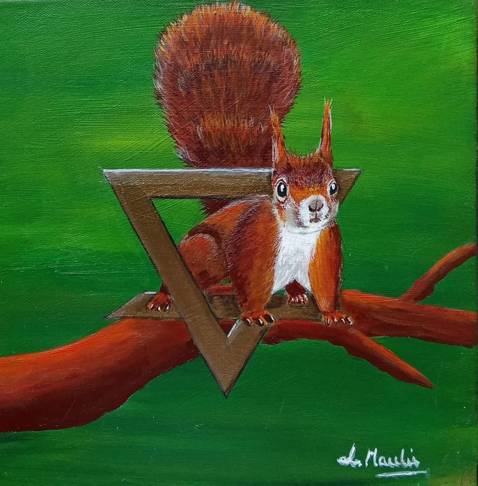

Terre · Écureuil
Communication
animale
Un autre regard sur la relation avec votre animal.
Explorer l’accompagnement
Le lien avec le vivant.
La communication animale ouvre un espace pour mieux comprendre votre animal et le lien qui vous unit.
Laure ne pose pas de diagnostic médical ou vétérinaire. Les professionnels compétents restent essentiels lorsque la situation le demande.